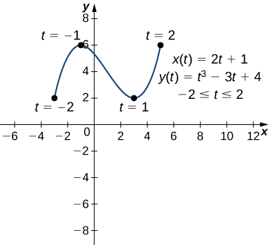
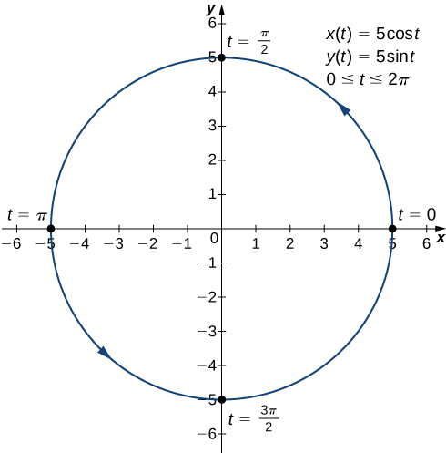
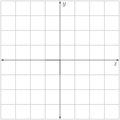
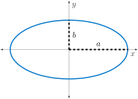

Section 9.2 Calculus of Parametric Equations
Motivating Questions
How can we determine the slope at a point on a parametrically-defined curve?
How do we find the area under a parametric curve?
What is the arc length of a parametric curve?
Suppose we would like to represent the location of a baseball after the ball leaves a pitcher’s hand. If the position of the baseball is represented by the plane curve \((x(t),y(t))\text{,}\) then we should be able to use calculus to find the speed of the ball at any given time. Furthermore, we should be able to calculate just how far that ball has traveled as a function of time. In this section, we answer questions such as these and more.
Preview Activity 9.2.1.
Pictured in Figure 9.2.1 is the plane curve defined parametrically by
Mark the orientation on the curve (i.e. direction of increasing values of \(t\)). Then, use the applet https://www.geogebra.org/m/yJNhQMQa 118 to verify your answer.
Compute \(\frac{dx}{dt}\) and \(\frac{dy}{dt}\text{.}\) Then, assuming that \(\frac{dy}{dx}=\frac{dy/dt}{dx/dt}\text{,}\) determine the value of \(\frac{dy}{dx}\) in terms of the parameter \(t\text{.}\)
Determine the point \((0,c)\) on the curve where it cross the positive \(y\)-axis. Then, determine the slope of the curve at this point.
Find the point \((a,b)\) on the curve where the tangent line is horizontal.
Subsection 9.2.1 Derivatives of Parametric Equations
We start by asking how to calculate the slope of a line tangent to a parametric curve at a point. Consider the plane curve defined by the parametric equations
The graph of this curve appears in Figure 9.2.2. It is a line segment starting at \((-1,-10)\) and ending at \((9,5)\text{.}\)
We can eliminate the parameter by first solving the equation \(x(t)=2t+3\) for \(t\) to find \(t=\frac{x-3}{2}\text{.}\) Substituting this into \(y(t)\text{,}\) we obtain
The slope of this line is given by \(\frac{dy}{dx}=\frac{3}{2}\text{.}\) Next we calculate \(x'(t)\) and \(y'(t)\text{.}\) This gives \(x'(t)=2\) and \(y'(t)=3\text{.}\) Notice that \(\frac{dy}{dx} = \frac{dy/dt}{dx/dt} = \frac{3}{2}\text{.}\) This is no coincidence, as outlined in the following theorem.
Theorem 9.2.3. Derivative of Parametric Equations.
Consider the plane curve defined by the parametric equations \(x=x(t)\) and \(y=y(t)\text{.}\) Suppose that \(x'(t)\) and \(y'(t)\) exist, and assume that \(x'(t) \neq 0\text{.}\) Then the derivative \(\frac{dy}{dx}\) is given by
Equation (9.2) can be used to calculate derivatives of plane curves, as well as critical points. Recall that a critical point of a differentiable function \(y=f(x)\) is any point \(x=a\) such that either \(f'(a)=0\) or \(f'(a)\) does not exist. Equation (9.2) gives a formula for the slope of a tangent line to a curve defined parametrically regardless of whether the curve can be described by a function \(y=f(x)\) or not.
Example 9.2.4. Finding a Tangent Line.
Find the equation of the tangent line to the curve defined by the equations
when \(t=2\text{.}\)
First find the slope of the tangent line using Equation (9.2), which means calculating \(x'(t)\) and \(y'(t)\text{:}\)
Next substitute these into the equation:
When \(t=2, \frac{dy}{dx}=\frac{1}{2}\text{,}\) so this is the slope of the tangent line. Calculating \(x(2)\) and \(y(2)\) gives \(x(2)=(2)^2-3=1\) and \(y(2)=2(2)-1=3\text{,}\) which corresponds to the point \((1,3)\) on the graph (Figure 9.2.5). The point-slope form of the equation of a line then gives an equation of the tangent line to be \(y-3=\frac{1}{2}(x-1)\text{,}\) or, in slope intercept-form, \(y=\frac{1}{2}x+\frac{5}{2}\text{.}\)
Note that the derivative is undefined when \(t=0\text{.}\) Also, \(x(0)=-3\) and \(y(0)=-1\) correspond to the vertex \((-3,-1)\) of the parabola in Figure 9.2.5. It makes sense then that the derivative is undefined here since the tangent line at this point is vertical.
Example 9.2.6. Critical Points on Parametric Curves.
Calculate the derivative \(\frac{dy}{dx}\) for each of the following parametrically defined plane curves, and locate any critical points on their respective graphs.
\(\displaystyle x(t)=2t+1, \ y(t)=t^3-3t+4, \ -2 \leq t \leq 5\)
\(\displaystyle x(t)=5\cos t, \ y(t)=5\sin t, \ 0 \leq t \leq 2\pi\)
-
Since \(x'(t)=2\) and \(y'(t)=3t^2-3\text{,}\) we have
\begin{align*} \frac{dy}{dx}= \mathstrut \amp \frac{dy/dt}{dx/dt}\\ =\mathstrut \amp \frac{3t^2-3}{2}. \end{align*}This derivative is zero when \(t=\pm 1\text{.}\) When \(t=-1\) we have \(x(-1)=2(-1)+1=-1\) and \(y(-1) = (-1)^3 -3(-1)+4=6\) which corresponds to the point \((-1,6)\) on the graph. When \(t=1\) we have \(x(1)=2(1)+1=3\) and \(y(1)=(1)^3-3(1)+4=2\) which corresponds to the point \((3,2)\) on the graph. The point \((3,2)\) is a relative minimum and the point \((-1,6)\) is a relative maximum, as seen in Figure 9.2.7.
Figure 9.2.7. Graph of the curve described parametrically by \(x(t)=2t+1, \ y(t)=t^3-3t+4, \ -2 \leq t \leq 5\text{.}\) -
Since \(x'(t)=-5\sin t\) and \(y'(t)=5\cos t\text{,}\) we have
\begin{align*} \frac{dy}{dx} = \mathstrut \amp \frac{dy/dt}{dx/dt}\\ =\mathstrut \amp \frac{5\cos t}{-5\sin t}\\ = \mathstrut \amp -\cot t. \end{align*}This derivative is zero when \(\cos t=0\) and is undefined when \(\sin t=0\text{.}\) This gives \(t=0,\frac{\pi}{2}, \pi, \frac{3\pi}{2}\text{,}\) and \(2\pi\) as critical points. Substituting each of these into \(x(t)\) and \(y(t)\) we obtain ordered pairs \((5,0)\text{,}\) \((0,5)\text{,}\) \((-5,0)\text{,}\) \((0,-5)\text{,}\) and \((5,0)\) respectively. These points correspond to the sides, top, and bottom of the circle that is represented by the given parametric equations (Figure 9.2.8). On the left and right edges of the circle, the derivative is undefined, and on th etop and bottom, the derivative equals zero.
Figure 9.2.8. Graph of the curve described parametrically by \(x(t)=5\cos t, \ y(t)=5\sin t, \ 0 \leq t \leq 2\pi\text{.}\)
Activity 9.2.2.
The path of a child on a merry-go-round is given by the parametric equations \(x = 4 \sin(t/2)\) and \(y = 4 \cos(t/2)\) where \(t\) is measured in seconds and \(x\) and \(y\) are measured in feet.
-
Sketch the path of the child for \(0 \leq t \leq 6\pi\text{.}\) Be sure to place arrows on the path to denote direction.
Figure 9.2.9. Grid used for Activity 9.2.2. Where is the child located at time \(t=\frac{3\pi}{2}\text{?}\) Mark that location on the path with a \(\circ\text{.}\)
Compute \(\frac{dx}{dt}\) and \(\frac{dy}{dt}\text{.}\) Without calculating, when \(t=\frac{3\pi}{2}\text{,}\) what do you expect the sign of each to be? Why?
Evaluate \(x' \left( \frac{3\pi}{2} \right)\) and \(y' \left( \frac{3\pi}{2} \right)\text{.}\)
Using the fact that \(\frac{dy}{dx} = \frac{dy/dt}{dx/dt}\text{,}\) calculate the slope of the curve when \(t=\frac{3\pi}{2}\text{.}\)
When the child is thrown from the merry-go-round, her (horizontal) path follows the tangent line. Determine the equation of the tangent line to the curve at time \(t=\frac{3\pi}{2}\text{.}\) Sketch this line on your graph above.
Subsection 9.2.2 Second-Order Derivatives
Our next goal is to see how to take the second derivative of a function defined parametrically. The second derivative of a function \(y=f(x)\) is defined to be the derivative of the first derivative; that is,
Since \(\frac{dy}{dx} = \frac{dy/dt}{dx/dt}\text{,}\) we can replace \(y\) on both sides of this equation with \(\frac{dy}{dx}\text{.}\) This gives us
If we known \(dy/dx\text{,}\) as a function of \(t\text{,}\) then this formula is straightforward to apply.
Activity 9.2.3.
Calculate the second derivative \(\frac{d^2y}{dx^2}\) for the plane curve defined by the parametric equations \(x(t)=t^2-3\text{,}\) \(y(t)=2t-1\text{,}\) \(-3 \leq t \leq 4\text{.}\)
Subsection 9.2.3 Area Under a Curve
Now that we have seen how to calculate the derivative of a plane curve, the next question is this: How do we find the area under a curve defined parametrically?
Consider a curve parameterized by the functions
For now, assume that \(x(t)\) is increasing on the interval \([a,b]\text{,}\) that \(x(t)\) is differentiable, and that we have an equal partition of the interval \([a,b]\text{.}\) Supoose that \(t_0=a < t_1 < t_2 < \cdots < t_n=b\) and consider Figure 9.2.12.
Using rectangles determined by left-hand endpoints to approximate the area under the curve, we see that the height of the \(i\)th rectangle is \(y(t_{i-1})\) and its width is \(x(t_i)-x(t_{i-1})\text{.}\) Denoting \(\Delta t_i = t_i - t_{i-1}\text{,}\) we approximate the area under the curve by
as \(max\{\Delta t_i\} \rightarrow 0\text{.}\)
Theorem 9.2.13. Area under a Parametric Curve.
Consider a non-self-intersecting curve defined by the parametric equations
and assume that \(x(t)\) is differentiable. Depending on whether the region is to the right or left of the oriented curve, the area under this curve is given by
Example 9.2.14. Area Under a Cycloid.
Find the area under one period of the cycloid defined by the equations
Using equation (9.4), we have
Activity 9.2.4.
-
To determine the area of a circle of radius \(r\text{,}\) do the following.
Parameterize the top half of a circle of radius \(r\text{.}\) Be sure to identify bounds on the parameter \(t\text{.}\)
Compute the value of the area under the top half of a circle of radius \(r\) using the parameterization from (i). Does your answer make sense? Why?
-
We now determine the area of the ellipse having semi-major axis of length \(a\) and semi-minor axis of length \(b\) as shown in Figure 9.2.16.
Figure 9.2.16. An ellipse having semi-major axis of length \(a\) and semi-minor axis of length \(b\text{.}\) Parameterize the top half of the ellipse shown in Figure 9.2.16. \\ Be sure to identify bounds on your parameter \(t\text{.}\)
Compute the value of the area under the top half of the ellipse using the parameterization from (i). Double this value to find the entire area inside the ellipse. Does your answer make sense when \(a=b\text{?}\)
Subsection 9.2.4 Arc Length of a Parametric Curve
Activity 9.2.5.
The cycloid in Figure (9.4) is defined by the equations
We aim to determine the length of this curve for \(0 \leq t \leq 2\pi\) (one period). We begin by partitioning the interval \([0,2\pi]\) into \(n\) subintervals of equal length and let \(0 = t_0 < t_1 < t_2 < \cdots < t_n = 2\pi\) be the endpoints of the subintervals. Shown in Figure 9.2.17 is the case of \(n=4\text{.}\) We approximate the length of the curve on each subinterval with the length of the segment connecting the endpoints.
Write a formula for the length of the line segment that connects the endpoints \((x(t_{i-1}), y(t_{i-1}))\) and \((x(t_i), y(t_i))\) of the \(i\)th subinterval \([t_{i-1},t_i]\text{.}\) (This length is our approximation of the length of the curve on this interval.)
Use your formula in (a) to write a sum that adds all \(n\) of the approximations to the lengths on each subinterval.
-
True or False? For \(\Delta t = t_i - t_{i-1}\text{,}\)
\begin{gather*} \sum_{i=1}^n \sqrt{[(x(t_{i})-x(t_{i-1})]^2 + [y(t_{i})-y(t_{i-1})]^2} \\ = \sum_{i=1}^n \sqrt{\left(\frac{x(t_{i})-x(t_{i-1})}{\Delta t}\right)^2 + \left(\frac{y(t_{i})-y(t_{i-1})}{\Delta t}\right)^2} \cdot \Delta t \end{gather*} What do we need to do with the sum in part (c) in order to obtain the exact value of the length of the graph of the curve on \([0,2\pi]\text{?}\) What integral does this produce? Evaluate, using WolframAlpha, this definite integral to find the length of the cycloid on \([0,2\pi]\text{.}\)
Theorem 9.2.18. Arc Length of a Parametric Curve.
Consider the plane curve defined by the parametric equations
and assume that \(x(t)\) and \(y(t)\) are differentiable functions of \(t\text{.}\) Then the arc length of this curve is given by
Example 9.2.19. Arc Length of a Function \(y=f(x)\).
Consider a plane curve defined by a function \(y=f(x)\) between \(x=a\) and \(x=b\text{.}\) Show that the arc length formula using a parameterization, equation (9.5), gives the same value
as found in Section 6.1.
Suppose that \(x=x(t), y=y(t), t_1 \leq t \leq t_2\) parameterizes the curve whose graph is \(y=f(x)\) between \(x=a\) and \(x=b\text{.}\) Then \(y(t)=f(x(t))\) and the chain rule gives \(y'(t)=f'(x(t))x'(t)\text{.}\) Using equation (9.5) gives
where we have \(a=x(t_1)\text{,}\) \(b=x(t_2)\text{,}\) and we have assumed that \(x'(t)>0\) so that \(dx = x'(t)\ dt\text{.}\) Of course this is the formula from Section 6.1.
Subsection 9.2.5 Summary
Parametrization is useful in modeling curves that are not necessarily graphs of functions. They can also be used to describe the position of an object as it moves along a given path. Given a parameterized curve, we determined how to find.
the first and second derivatives of the parameterization.
a tangent line at any point of the curve.
the area under the curve.
the arc length of the curve.
Exercises 9.2.6 Exercises
1. Taking a Derivative.
If \(x = 5 t^4 + 6\) and \(y = 2 t - t^2\text{,}\) find the following derivatives as functions of \(t\) .
\(dy/dx=\)
\(d^2y/dx^2 =\)
2. Horizontal Tangent Lines.
Consider the curve given by the parametric equations
a.) Determine the point on the curve where the tangent is horizontal.
\(t=\)
b.) Determine the points \(t_1\text{,}\) \(t_2\) where the tangent is vertical and \(t_1 \lt t_2\) .
\(t_1=\)
\(t_2=\)
3. Find a Tangent Line to a Parametrically-Defined Curve.
Find parametric equations for the tangent line at \(t = 1\) for the motion of a particle given by \(x(t) = 2t^{2}+7\text{,}\) \(y(t) = 8t^{3}\text{.}\)
For the line,
\(x(t) =\)
\(y(t) =\)
(Note that because the correctness of a parametrically described line depends on both \(x(t)\) and \(y(t)\text{,}\) both of your answers may be marked incorrect if there is an error in one of them.)
4. Area of an Ellipse.
The following parametric equations define an ellipse.
Compute the area enclosed by this ellipse.
Answer:
5. A Spiral.
(a) On a separate sheet of paper, sketch the parameterized curve \(x=t \cos t, \ y=t \sin t\) for \(0 \leq t \leq 4\pi\text{.}\) Use your graph to complete the following statement:
At \(t = 3.5\text{,}\) a particle moving along the curve in the direction of increasing \(t\) is moving
up
down
neither up nor down
to the left
to the right
neither to the left nor to the right
(b) By calculating the position at \(t = 3.5\) and \(t=3.51\text{,}\) estimate the speed at \(t=3.5\text{.}\)
speed \(\approx\)
(c) Use derivatives to calculate the speed at \(t=3.5\) and compare your answer to part (b).
speed =
6. Motion of a Particle.
A particle moves with its position given by \(x = \cos\!\left(t\right)\) and \(y = \sin\!\left(\frac{t}{4}\right)\text{,}\) where positions are given in feet from the origin and time \(t\) is in seconds.
Find the speed of the particle.
Speed =
Find the first positive time when the particle comes to a stop.
\(t =\)
If \(n\) is any odd integer, write a formula (in terms of \(n\)) for all positive times \(t\) at which the particle comes to a stop.
\(t =\)
7. A Collision.
Two particles move in the \(xy\)-plane. At time \(t\text{,}\) the position of particle \(A\) is given by \(x(t) = 4 t - 4\) and \(y(t) = 3 t - k\text{,}\) and the position of particle \(B\) is given by \(x(t) = 3 t\) and \(y(t) = t^2 - 2t - 1\text{.}\)
(a) If \(k = 3\text{,}\) do the particles ever collide?
yes
no
it is not possible to determine for certain
(Be sure that you are able to explain your answer!)
(b) Find \(k\) so that the two particles are certain to collide.
\(k =\)
(c) At the time the particle collide in (b), which is moving faster?
particle A
particle B
neither particle (they are moving at the same speed)
8. Examining Path and Speed of a Particle.
A particle moves in the \(xy\)-plane so that its position at time \(t\) is given by \(x=\sin (2t)\text{,}\) \(y=-\cos (2t)\) for \(0 \leq t < 2\pi\text{.}\)
At what time does the particle first touch the \(x\)-axis? What is the speed of the particle at that time?
Is the particle ever at rest?
Recall the \(x\)-axis is where \(y=0\text{.}\) If the particle is at rest, think about what the value of the velocity would need to be.
9.
Show that the total length of the ellipse \(x=4\sin\theta\text{,}\) \(y=3\cos\theta\) is
where \(e=\frac{c}{a}\) and \(c=\sqrt{a^2-b^2}\text{.}\)
10. A Teardrop.
The "teardrop" is a curve parameterized by
where \(a\) and \(b\) are constants defining the shape.
For your choice of positive constants \(a\) and \(b\text{,}\) use the applet https://www.geogebra.org/m/yJNhQMQa 122 to sketch a teardrop curve.
Determine the area enclosed by the general teardrop curve.
https://www.geogebra.org/m/yJNhQMQa/webwork2_files/helpFiles/Units.html/webwork2_files/helpFiles/Units.html/webwork2_files/helpFiles/Units.htmlhttps://www.geogebra.org/m/yJNhQMQa